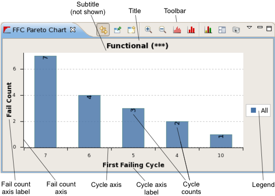
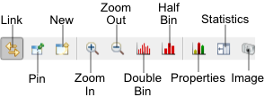

FFC Pareto chart view
The FFC Pareto chart displays the number of fails which occur in the most frequently first-failing cycles, sorted by number of failures per cycle. It helps to quickly find the cycles where the most fails are located.
An FFC Pareto chart is opened by choosing from the shortcut menu of a Test summary tab. It can also be opened using the New button (see below) from the toolbar of another FFC Pareto chart or using the menu command.

These are the elements in the main area of the chart (for the toolbar and shortcut menu, see below):
- Title: By default, the name of the test being displayed and its number in parentheses. You can edit this label in the chart properties.
- Subtitle: By default, the subtitle is empty. You can edit this label in the chart properties.
- Toolbar: The action buttons of the chart. See the Toolbar section, below, for details.
- Fail count axis: Indicates the number of tests for the charted first failing cycles.
- Fail count axis label: By default, this is "Test Count". You can edit this label in the chart properties.
- Cycle axis: The axis for the cycles in which first fail occurred. You can edit this label in the chart properties.
- Cycle axis label: By default, this is "First Failing Cycle". You can edit this label in the chart properties.
- Legend: A description of the colors used. You can configure the display of the legend in the preferences.
You can zoom in on a portion of the chart by clicking it to the left of the first column you want to see and drag the mouse to the right of the last column you want to see in the zoomed area. (You need to drag over at least three columns.) You can return to displaying all bars by double-clicking anywhere in the chart.
Toolbar

The toolbar of an FFC Pareto chart view includes these buttons:
- Link: Links the display in the view to the selected row in the data navigation view.
In this mode, if the selection in the data navigation view changes, the display updates automatically.
- Pin: Freezes the display in the view.
In this mode, the view keeps displaying the rows it currently displays, even when the selection in the data navigation view changes. Dynamic updating can be resumed by clicking the Link button.
- New: Creates a new FFC Pareto chart view.
- Zoom In: Displays fewer cycles in the chart.
- Zoom Out: Displays more cycles in the chart.
- Double Bin: Displays fewer cycles in the chart.
- Half Bin: Displays more cycles in the chart.
- Properties: Opens the FFC Pareto Chart Properties dialog.
- Statistics: Displays the data that underly the graph. The information categories are the same as the columns in test summary tabs. Clicking the button again hides the values and displays the chart.
- Image: Clicking this buttons lets you save the current chart display as a PNG or JPEG image.
- Switch Legend: Switches the position of the legend between the bottom and the right side of the chart.
Shortcut menu
The shortcut menu of an FFC Pareto chart contains these commands:
- Zoom In: Displays fewer cycles in the chart.
- Zoom Out: Displays more cycles in the chart.
- Failing Cycle Axis: Sets the number of failing cycles displayed on
the cycle axis:
- 30: Displays 30 cycles.
- 20: Displays 20 cycles.
- 10: Displays 10 cycles.
- Double: Increases the number of displayed cycles.
- Half: Reduces the number of displayed cycles.
If there are fewer than the specified number of first failing cycles, only the actual number of columns are displayed. (For example, if you specify 20 but there are only 12 different first failing cycles, the chart contains only 12 columns.)
- Fail Count Axis: Sets the range of the fail count axis:
- Auto: Sets the axis to be a little longer than the largest column.
- Double: Increases the length of the axis.
- Half: Reduces the length of the axis.
If there are fewer than the specified number of first failing cycles, only the actual number of columns are displayed. (For example, if you specify 20 but there are only 12 different first failing cycles, the chart contains only 12 columns.)
- Restore Defaults: Resets the zoom level and axis settings to their defaults.
- Show In: The Pattern Debug Tool command in
this submenu opens the Pattern Explorer.
This requires that:
- The Automatically expand pattern option in the Pattern Debug Tool preferences (Align Display section) is set
- The pattern file that contains the cycle is loaded in SmarTest.
- The pattern file contains the label which has generated the data log.
If the pattern containing the cycle is not the primary pattern, this command simply opens the Pattern Explorer.
If the pattern is the primary pattern, the cycle is selected in the Pattern Explorer.
- Properties: Opens the FFC Pareto Chart Properties dialog.
Functional changes
- Introduced in SmarTest 7.2.0
- SmarTest 7.2.1: Updated color scheme.
- SmarTest 7.2.2: Added option to export charts as JPEG images
- SmarTest 7.3.2: Changed y-axis label from "Test Count" to "Fail Count"